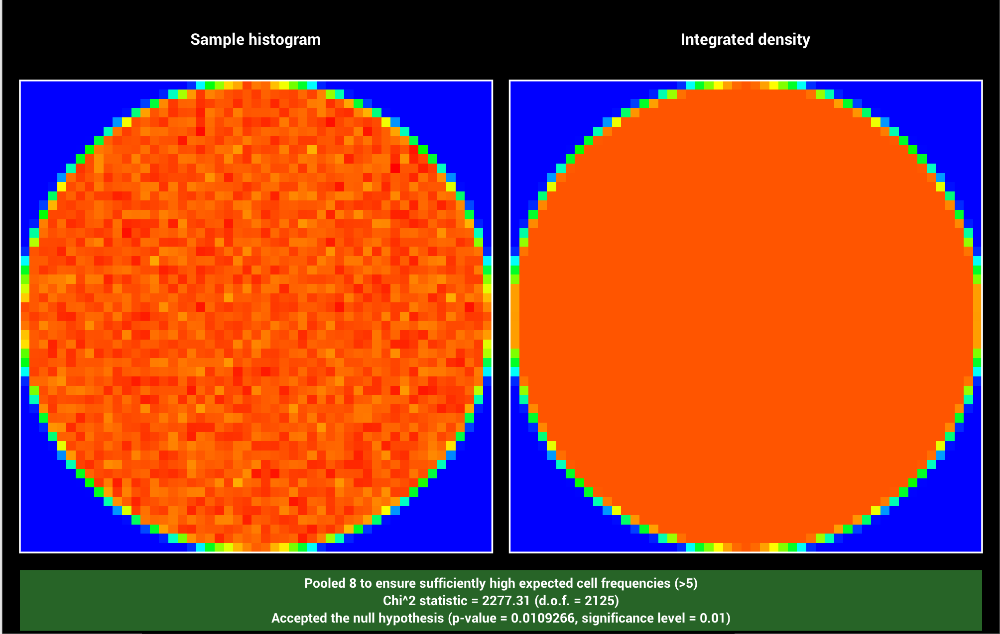

**Homework 2 - Sampling and Warping**
Student Name: Wu Zhanyi
Student ID Number: 22-737-266
(Note: please read the [supplementary](#supplementary) section first before working on this report.)
# Square to Uniform Disk
**Time spent on this task:5 min**
**Describe your implementation of `Warp::squareToUniformDisk` and the associated PDF.**
Derivations and results are given in lecture. Here I use the same way.
**Warping Visualization:**
**$\chi^2$ Hypothesis Test Outcome:**

# Square to Uniform Spherical Cap
**Time spent on this task: 10 min**
**Describe your implementation of `Warp::squareToUniformSphericalCap` and the associated PDF.**
The area of cap is $2\pi(1-\cos(\theta_{max}))$, so the pdf should be $\frac {1}{2\pi(1-\cos\theta_{max}\;)}$.
Known $p(\omega)= \frac {p(\theta,\phi)} {\sin \theta}$, then $p(\theta , \phi) = \frac {\sin\theta}{2\pi(1-\cos\theta_{max}\;)}$.
So $p(\theta)=\int_{0}^{2\pi} p(\theta , \phi) d\phi = \frac{\sin \theta}{1-\cos\theta_{max}}$ , and $p(\phi | \theta)=\frac{1}{2\pi}$.
CDF should be $P(\theta)=\int_{0}^{\theta} p(\theta) d\theta = \frac{1-\cos\theta}{1-\cos\theta_{max}}\;, P(\phi| \theta)=\frac{\phi}{2\pi}$.
Last, $\theta=\arccos(1-(1-\cos\theta_{max})\xi_1)\;,\, \phi=2\pi\xi_2$
**Warping Visualization:**
**$\chi^2$ Hypothesis Test Outcome:**
# Square to Uniform Sphere
**Time spent on this task: 10 min **
**Describe your implementation of `Warp::squareToUniformSphere` and the associated PDF.**
The area of sphere is $4\pi$, so the pdf should be $\frac {1}{4\pi}$.
Then $p(\theta , \phi) = \frac {\sin\theta}{4\pi}$.
So $p(\theta)=\int_{0}^{2\pi} p(\theta , \phi) d\phi = \frac{\sin \theta}{2}$ , and $p(\phi | \theta)=\frac{1}{2\pi}$.
CDF should be $P(\theta)=\int_{0}^{\theta} p(\theta) d\theta = \frac{1-\cos\theta}{2}\;, P(\phi| \theta)=\frac{\phi}{2\pi}$.
Last, $\theta=\arccos(1-2\xi_1)\;,\, \phi=2\pi\xi_2$
**Warping Visualization:**
**$\chi^2$ Hypothesis Test Outcome:**
# Square to Uniform Hemisphere
**Time spent on this task:**
**Describe your implementation of `Warp::squareToUniformHemisphere` and the associated PDF.**
The derivation is mostly like sphere.
Final result is $\theta=\arccos( 1 - \xi_1)\;,\, \phi=2\pi\xi_2$
**Warping Visualization:**
**$\chi^2$ Hypothesis Test Outcome:**
# Square to Cosine Hemisphere
**Time spent on this task:**
**Describe your implementation of `Warp::squareToCosineHemisphere` and the associated PDF.**
The pdf is $p(\theta)=\frac {\cos\theta}{\pi}$.
Then $p(\theta , \phi) = \frac {\sin\theta \cos\theta}{\pi}$.
So $p(\theta)=\int_{0}^{2\pi} p(\theta , \phi) ~d\phi = \sin2\theta$ , and $p(\phi | \theta)=\frac{1}{2\pi}$.
CDF should be $P(\theta)=\int_{0}^{\theta} p(\theta) d\theta = \frac{1-\cos2\theta}{2} = 1- \cos\theta^2\;, P(\phi| \theta)=\frac{\phi}{2\pi}$.
Last, $\theta=\arccos(\sqrt{1-\xi_1})\;,\, \phi=2\pi\xi_2$
**Warping Visualization:**
**$\chi^2$ Hypothesis Test Outcome:**
# Square to Beckmann
(Please use the provided LaTeX template to answer the questions in this section. For LaTeX math symbols and formulas, referring to this [cheatsheet](http://tug.ctan.org/info/undergradmath/undergradmath.pdf) is recommended.)
**Time spent on this task:**
**Show your derivation of $\int_0^{2\pi}\int_0^{\frac{\pi}{2}}p(\theta, \phi)~d\theta d\phi = 1$ for Beckmann distribution**:
\begin{equation}
\begin{split}
\bullet ~ P(\theta_0, \phi_0) & = \int_0^{\phi_0}\int_0^{\theta_0}p(\theta, \phi)~d\theta d\phi \\
& = \int_0^{\phi_0}\int_0^{\theta_0}\frac{e^{\frac{-\tan^2\theta}{\alpha^2}}}{\pi \alpha^2 \cos^4\theta} \cos\theta \sin\theta ~d\theta d\phi \\
& let \frac{-\tan^2\theta}{\alpha^2} = f(\theta). \, notice\,that f^{\prime}(\theta)= - \frac{2\sin\theta}{\alpha^2 \cos^3\theta} \\ \\
& Then\,above = \int_0^{\phi_0}\int_0^{\theta_0} \frac{1}{\pi}e^{f(\theta)}\frac{\sin\theta}{\alpha^2 \cos^3\theta} ~d\theta d\phi\\
& = -\int_0^{\phi_0}\int_0^{\theta_0} \frac{1}{2\pi} e^{f(\theta)} f^{\prime}(\theta) ~d\theta d\phi\\
& = -\frac{1}{2\pi} \int_0^{\phi_0} d\phi \int_0^{\theta_0} e^{f(\theta)} f^{\prime}(\theta) d\theta \\
& = -\frac{\phi_0}{2\pi} e^{f(\theta)}\Bigg|_{0}^{\theta_0} \\
& = \frac{\phi_0}{2\pi} (e^{f(0)}-e^{f(\theta_0)}) \\
\bullet ~ P(\frac{\pi}{2}, 2\pi) & = \frac{2\pi}{2\pi}(e^0-e^{-\infty})\\
& = 1
\end{split}
\end{equation}
**Show your derivation of the Beckmann distribution sampling strategy by inverting the CDF, given random uniform samples $\xi_1, \xi_2$**:
\begin{equation}
\begin{split}
& \bullet ~ p(\theta, \phi) = \frac{e^{\frac{-\tan^2\theta}{\alpha^2}}}{\pi \alpha^2 \cos^4\theta} \cos\theta \sin\theta \\
& \bullet ~ p(\theta)= - e^{f(\theta)}f^{\prime}(\theta)\;and \; p(\phi | \theta)=\frac{1}{2\pi} \\
& \bullet ~ P(\theta)= e^{f(0)}-e^{f(\theta)} = 1- e^{\frac{-\tan^2\theta}{\alpha^2}}\;and \; P(\phi | \theta)=\frac{\phi}{2\pi} \\
& \bullet ~ \phi = \arctan(\sqrt{-\alpha^2\ln(1-\xi_1)}) \\
& \bullet ~ \theta = 2\pi\xi_2 \\
& \bullet ~ Sampled ~ Point: \\
& ~~~~ x = \sin\theta\cos\phi \\
& ~~~~ y = \sin\theta\sin\phi \\
& ~~~~ z = \cos\theta
\end{split}
\end{equation}
**Warping Visualization:**
**$\chi^2$ Hypothesis Test Outcome:**
# Feedback
**Use this section to provide feedback about this assignment (each task, the handout, Nori, etc.). We appreciate your opinions to help improve future homeworks and projects.**
...
# Supplementary
* For each task, please note down the time you spent working through it and use at least a few sentences to describe your implementation. If applicable, also report the problems you encounter (e.g. whether or how it's solved, what is the difficult part).
* Please let us know to what extent your code is working (e.g. you only managed to work through part of this assignment, or your solution doesn't operate as expected in some corner cases). We encourage you to share your thinking process, and points will be granted based on your description even if the code is not 100% functioning.
* Nori generates both EXR and PNG format output. Please use PNG for image comparison in the report.
* This report template uses [Markdeep](https://casual-effects.com/markdeep/), which supports Markdown syntax in HTML file. For example usage, please refer to the [official demo document](https://casual-effects.com/markdeep/features.md.html).
* LaTeX is also supported for typing mathematical formulas:
$$
L_o(\mathbf{x}, \omega_o) = \int_{\Omega} L_i(\mathbf{x},\omega_i)\, f(\mathbf{x}, \omega_i, \omega_o)\, |\cos\theta_i|\, \mathrm{d}\omega_i
$$